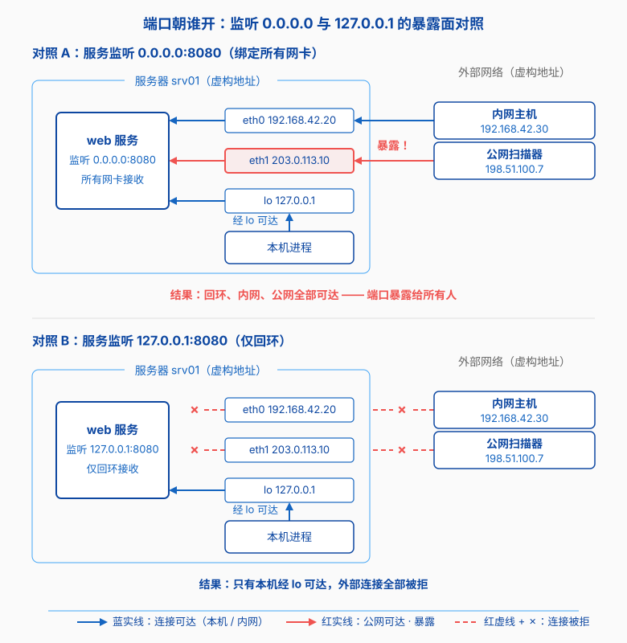
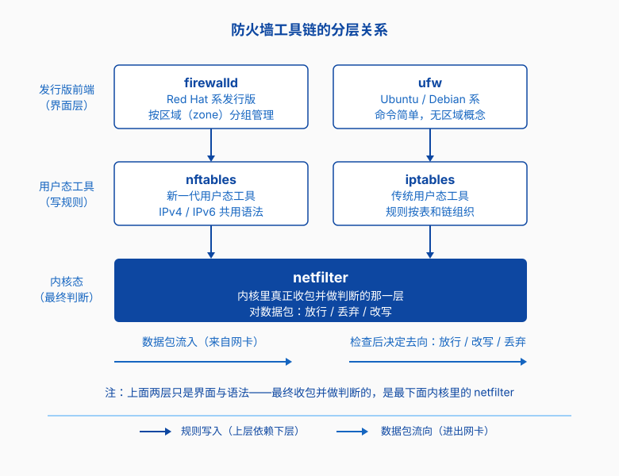
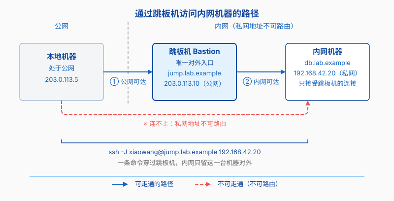

服务器上的防线
第七章的端口、服务与防火墙一节列了 SSH 连不上时该查的几件事。命令不难，难的是它们背后的分工。
端口、防火墙、SELinux、跳板机，管的却是同一条线上的不同环节。同样是“服务访问不了”，连不上和页面打开却被拒绝，往往卡在不同的地方：前者要看监听的地址和防火墙，后者可能是 SELinux 或 AppArmor 不让进程读文件。这类问题单查一个环节看不出来，得先知道整条线上有谁在值班。
端口朝谁开
正文里已经拆过 ss -tlnp 输出中 0.0.0.0 和 127.0.0.1 的区别，这里要补的是怎么选。写在 0.0.0.0 上省事，代价是服务摆在了所有网卡前面：服务器挂着几张网卡，它就在几个地址上同时开门，回环算一个，局域网算一个，带着公网 IP 的话，公网也算一个。

所以配置服务时先问清楚这个端口开给谁。只用本机的，监听 127.0.0.1。要给同组同学看的，就监听内网网卡地址，比如 192.168.42.20。确实要给所有人用的，再考虑 0.0.0.0，并确认它带认证。一个不用密码就对外开着的数据库端口，很快会被扫描器找上门。
这个做法叫最小暴露面：监听地址能窄就窄，回环地址够用的时候就别写内网地址；内网地址够用的时候，也不必去碰 0.0.0.0。防火墙排在第二道，第一道闸门在程序自己的配置里。
netfilter：内核里的那层框架
名字先理一遍。iptables、nftables、firewalld、ufw 这四个词常被摆在一起，但真正干活的还有最底下那层 netfilter，它们合起来分三层。

最下面一层藏在内核里，叫 netfilter。数据包经过协议栈上几个固定位置时会停一下，netfilter 在这里给它一次被检查的机会：放行、丢掉或改写。这一层由 Rusty Russell 在 1990 年代末发起，随 Linux 内核 2.4 进入主线，一直用到现在。
netfilter 是内核机制，用户通常没法直接和它说话，于是就有了用户态工具：你用命令描述规则，工具把规则交给内核。iptables 是随 netfilter 一起出现的第一个用户态工具；再往前还有 ipfwadm、ipchains 两代，不过那不属于 netfilter 这套。规则按表和链组织，filter 表管放行和丢弃，nat 表管地址改写。
从 iptables 到 nftables
iptables 用了十几年，毛病慢慢显出来。规则一多，每个包都要从头比对一遍，开销跟着涨；IPv4 和 IPv6 分成 iptables 与 ip6tables 两套命令，同一条规则要写两遍。
nftables 换了做法，项目大约在 2008 年前后启动，2014 年前后随 Linux 内核 3.13 进入主线。它用集合和查询表做匹配，规则多的时候不必一条条比对；IPv4 和 IPv6 共用一套语法；多个条件能写进一条规则。
新旧交替比想象中慢。两套机制在内核里并存了很久，iptables 这个命令在多数发行版上今天还能敲，有些发行版把它做成了 nftables 的兼容外壳：你输入 iptables，底下跑的是 nft。
firewalld 与 ufw：发行版各自的前端
nftables 能力够，语法却是给懂网络的人准备的。运维要的更实际：放行 443 端口，改完立刻生效，重启以后规则还在。于是各个发行版在底层工具上又包了一层前端，管配置和持久化。
Red Hat 系装的是 firewalld。它按区域（zone）分组：一张网卡算在哪个区域，那个区域放行哪些服务和端口。换网络环境切一次区域就行，改配置也不用重启。
Ubuntu 默认带着 ufw，Debian 上也能装到，名字来自 Uncomplicated Firewall，定位是省事：sudo ufw allow 443 放行端口，sudo ufw status 看放了什么，没有区域这一层概念。
三层的关系清楚了：netfilter 在内核里做判断，nftables 和 iptables 往内核里写规则，firewalld 和 ufw 是包在工具外面、给运维用的界面。命令写法在发行版之间差得远，最终收包的还是同一层。
SELinux：连 root 也管得住
前面几层管的是“能不能进来”，SELinux 管的是另一件事：一个已经在跑的程序，能读哪些文件。
Linux 原来的权限模型叫自主访问控制（DAC，Discretionary Access Control）。文件权限分 rwx 三组，决定权在属主手里，属主可以把自己的文件设成 777。文件权限是给人看的，判断依据却在属主身份。这套模型的前提是文件主人清楚自己在做什么。
这个前提在服务器上容易站不住。Web 服务被攻破，攻击者拿到 www-data 这个身份，只要它读得到某个文件，DAC 就拦不住。
SELinux 叠了第二层，叫强制访问控制（MAC，Mandatory Access Control）。判断依据换成了全局策略：哪类标签的进程能读哪类标签的文件。策略由管理员配置，进程和 root 都改不了。它出自美国国家安全局（NSA），2000 年前后以 GPL 协议公开，2003 年前后进入 Linux 2.6 内核。
它有两种常用模式：enforcing 拦下违反策略的操作并记日志，permissive 照常判断、照常记日志，只是不拦。排查时可以临时切到 permissive，确认是不是它在挡路。
初学者被拦，很多是标签的问题。网站文件从家目录用 mv 搬过来，或者用 cp -a 复制、覆盖了旧文件，属主和权限都对着，安全上下文却还是家目录那一套，Web 进程读不到，浏览器那边是 403。ls -Z 查标签，restorecon 恢复成这个路径下该有的样子。
Ubuntu 和 SUSE 系默认用同类工具 AppArmor。两者的差别记成一句话：SELinux 认标签，AppArmor 认路径，后者的规则直接写路径，比如“这个程序只许读 /etc/nginx/ 下面的文件”。
跳板机：为什么不直接连
场景换到图书馆。你敲 ssh 192.168.42.20，等到超时。问师兄，师兄说先连跳板机。
卡住的原因是内网地址不可路由。第七章讲 NAT 时说过，实验室机器普遍用私网地址，宿舍的网络看不到它们。要进去，得先登录一台带公网地址的机器，再往内网跳。这台机器就是跳板机（bastion host）。
为什么不给每台内网机器都配公网地址？100 扇门各自上锁，哪把松了都出事。只留一台跳板机对外，内网机器只接受它的连接，防火墙里这一条就写得死。审计也一样：登录都经过同一台机器，谁在什么时候上了哪台机、敲了什么，记录落在同一个地方。
SSH 自带这个功能（OpenSSH 7.3 以后），写上 ssh -J xiaowang@jump.lab.example 192.168.42.20，一条命令就能穿过跳板机连到内网机器。也有团队用 VPN 顶这个位置：连上以后，你的机器就像坐在实验室网里，内网地址直接可达。

可以照着做的几个习惯
- 新机器上手先看监听：
ss -tlnp的地址列里出现0.0.0.0的每一项，都要能说出理由。 - 本地开发的服务监听
127.0.0.1，要给同事看时走 SSH 端口转发，不要直接改成0.0.0.0。 - 防火墙只放行确实需要的端口：Ubuntu 上用
sudo ufw status看清单，Red Hat 系用sudo firewall-cmd --list-all。 - 平时用普通用户登录，需要动系统配置时再加
sudo。这条在第三章讲过。 - 程序读不到文件时先别急着
chmod 777，用ls -Z看一眼标签，确认是不是 SELinux 或者 AppArmor 挡的。 - 能连跳板机就不要给自己开公网直连的口子。多一跳换来的是内网不在扫描器的视野里。